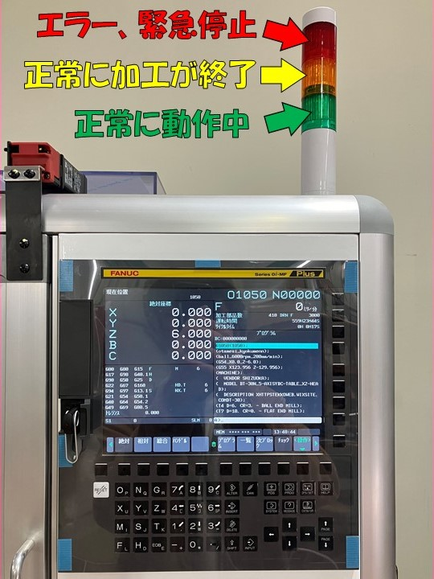

５軸MCの起動
５軸MCを起動します。２つの緑色の弁が閉まっていることをかくにんしてから、コンプレッサーの電源を入れます。
加工機側面のトグルスイッチを上に入れて、緑色の電源スイッチを押してください。 しばらく待っていると加工機が起動します。
加工機が起動したら、まず５つの可動部（軸）を機械原点に復帰させてください。
画像に示すように、まず「原点」と書かれた白いボタンを押して、次に「POS」と 書かれた黒いボタンを押します。
そうしたら、一番最初に「＋Z」と書かれた白いボタンを押してから、画像のように ＋X、＋Yと書かれた白いボタンを押して、最後に＋Bと＋Cの丸い白いボタンを押してください。
全て押すと５つ全ての可動部が機械原点に復帰します。
加工機の電源を入れたら、まずこの「機械原点復帰」（ホーミング）を行ってください。

Gコードのアップロード
５軸MC本体に、Fusionで生成したGコードをアップロードする手順を説明します。まず、生成したGコードのテキストファイルをUSBメモリの最上層の場所（エクスプローラーで USBメモリを開いてすぐの場所）にコピーしてください。何らかのフォルダ内には入れないでください。
PCからUSBメモリを取り外して加工機の場所まで行き、画像に示すところにUSBメモリを差し込みます。
操作盤にて、「編集」と書かれた白いボタンを押してください。制御プログラムのファイルや内容を編集できるモードになります。
次に「PROG」と書かれた黒いボタンを押してください。プログラムが表示されます。
液晶画面の「一覧」と書かれた下の無地の黒いボタンを押してください。加工機の中に入っているGコードが一覧で 表示されます。
画面の一番下に表示されている10個のブロックの中に書かれた文字は、そのすぐ下にある何も書かれていない黒いボタンに対応しています。
画面右下の（操作）と書かれた下の黒いボタンを押してください。画面の一番下のブロックに書かれている文字が変化します。
次は画面左下の（ﾃﾞﾊﾞｲｽ変更）のボタンを押してください。
次に「USB」と書かれた下のボタンを押してください。USBメモリ内のデータファイルが一覧で表示されるはずです。
一覧表示されたUSBメモリ内のデータの中から、先ほどメモリに入れたGコードを矢印ボタンで選んでください。 黄色くなっているのが今選んでいるファイルになります。

画面の下端のブロックのメニューは今表示されているものが全てではなく、画像に示す右端のボタンを押すと 更に右に隠れているメニューブロックを呼び出すことができます。押してください。
押すと下画像のように画面下ブロックの文字が変わるはずです。
「F入力」と書かれた下のボタンを押してください。
「F取得」のボタンを押してください。今黄色になっているファイルのファイル名が白いテキストボックスに入力されます。
「F設定」のボタンを押してください。F取得で白いテキストボックスに取得されたファイル名が／F：の右に入ります。
下の文字入力ボタンで、「Oxxxx」（xxxxは好きな数字４桁）と入力してください。これが加工機内にでのGコードのファイル名になります。

「P設定」ボタンを押してください。P：の右に打ち込んだファイル名が入ります。
「実行」のボタンを押してください。USBメモリ内から加工機内のメモリにＧコードのファイルがアップロードされます。
加工の開始の手順
これで加工機にGコードをアップロードすることができました。次に加工をスタートする手順を説明します。また一番右のボタンを押して、メニューを移動してください。
「ﾃﾞﾊﾞｲｽ変更」のボタンを押してください。
「CNC MEM」のボタンを押してください。加工機内部メモリに入っているGコードのファイルが一覧で表示されます。
表示されたGコード一覧から、さっきUSBからアップロードする際に自分で 打ち込んだ「Oxxxx」のファイル名を矢印ボタンで移動して探してください。
見つけたらそのファイルが黄色になるようにしておいてください。
黄色になったら、そのままで、「ﾒｲﾝﾌﾟﾛｸﾞﾗﾑ」のボタンを押してください。「＠」みたいな マークが今黄色になっていたファイル名の左につくと思います。
ファイル名の頭に＠が付いたGコードがメインプログラムとなり、この加工機は加工を開始すると 常にこのメインプログラムを用いて加工を行います。
ワーク座標原点の入力
アップロードしたGコードをメインプログラムに設定できたら、FusionCAMでの作業のときに メモしたワーク座標原点の座標値を加工機本体に入力していきます。まず「OFS/SET」ボタンを押してください。

座標系の下のボタンを押してください。

そうすると、画面にG54ワーク座標原点の座標を打ち込む欄が出てくるので、 矢印ボタンで入力欄を選んで、数字キーでメモした座標を内婚でINPUTボタンで入力してください。
G54の座標を入力したらページ送りボタンの下を押すと、Ｇ55以降のワーク座標原点座標の入力欄 が出てくるので、メモしておいた値をくれぐれも打ち間違いのないように入力してください。


材料のセッティング
加工の準備は整ったので、削る材料をセットします。おそらくこのような直径25mm程度の円柱型の 材料を使用すると思われます。材料を取り付けるために、チャックを手前に移動させます。
操作盤にて、手動ボタンとPOSボタンを押します。
操作盤下のツマミをＹと×100に合わせて、ハンドルをゆっくり時計回しにします。 Yの機械座標が80～90あたりになるようにしてください。

「RESET」と書かれた白いボタンを押してから、正面と扉を開いて、材料をチャックの中央に差し込むように 置いてください。入らなかったら黒色のリングを手で反時計回りに回してチャックを緩めてください。
このとき、チャックは締めなくてかまいません。
材料とドリルが衝突しないかどうかよく確認しながら、 操作盤で「原点」ボタンを押してから「＋Y」ボタンを押してY軸を機械原点復帰してください。

画面の下端のブロックのうち「絶対」と書かれた下の黒いボタンを押してください。座標の数値が変わります。
手動ボタンを押して、ツマミをZと×100に合わせてください。
ハンドルを反時計回りに回しますが、回しすぎると刃物が材料に衝突して刃物や加工機が破損します！
上の画面に表示されているZの座標を0.5にしてください。
RESETボタンを押して正面の扉を開けてください。
一度チャックを緩めます。その後、下の画像のように材料を上に引っ張って刃物に押し付けながら、下の黒いリングを 時計回りに回してチャックを締めます。
ある程度締めたら、チャックを締める専用の棒があるので、黒いリングの側面にある穴に棒を２本差し込んで、 両手でしっかりと締めて固定してください。
扉を閉めて、また操作盤にて、原点ボタンを押した後、「＋Z」と書かれた白いボタンを押してください。
このとき、くれぐれもX、Y、B、Cのボタンを押さないこと！！！

これで材料の取り付けは完了です！次は加工です！
加工の開始
ついに加工を開始します！操作盤より、「自動」と書かれた白いボタンを押してください。Gコードを用いた自動加工を 行うモードになります。また、「PROG」と書かれた黒いボタンを押してください。今からの加工に使われるGコードが 画面に表示されます。
画面にﾁｪｯｸと書かれたすぐ下のボタンを押してください。画面に今の座標や使用している工具の番号、工具の回転数、 工具の移動速度、入力されているGコード、加工時間、使用しているＧコードの一部などが全て表示されます。
加工を開始する前に、加工機の自動動作中に押す可能性のあるボタンを２つ教えておきます。
１つ目は「緊急停止」ボタンです。赤色のくそでかボタンです。これを押せばいかなる状態だろうと即時に加工機が動作を停止します。
以下に示すような、とにかく加工機がやばそうな動きを見せたら一刻も速く叩き込む感じで力強く押してください。
【やばい動きの例】 ・チャックとドリル、テーブルと工具ホルダーなど、当たってはいけない部分同士が衝突しそうなとき
・工具が回転せずに材料にぶつかろうとしているとき
・ゆっくり動くはずのところで工具やテーブルが高速で動きだしたとき
もし緊急停止ボタンを押した場合は速やかに担当の先生を呼んでください。
もう一つは「シングルブロック」ボタンです。これを押すと、スタートボタンを押すごとにGコードを１行ずつ 実行するようになります。加工を一時停止したいときや、Ｇコードの安全性に自信がないときなどに押してください。
加工機の状態におかしなところはないか、今までの捜査にミスはないかよく確認してください。
操作盤の下のほうにある緑色の「スタート」と書かれたボタンを押すとついに！加工が開始されます！
加工機の上に設置された３色のランプについても説明しておきます。
正常に加工が行われているときは、常に緑色のランプが点灯します。
正常に加工が終了すると、加工終了の合図として黄色のランプが点灯します。
加工機の可動部が可動域を超えてしまったとき（オーバートラベルといいます）など、加工機が エラーを吐いたときに赤色のランプが点灯します。また、緊急停止ボタンを押したときも 赤色のランプが点灯します。 
ここまでこのテキストを見て作業をしてくださった方、本当にお疲れさまでした！本当にありがとうございました！
これであなたも５軸マシニングセンタマスターです！どんどんいろんな形状を削っていきましょう！